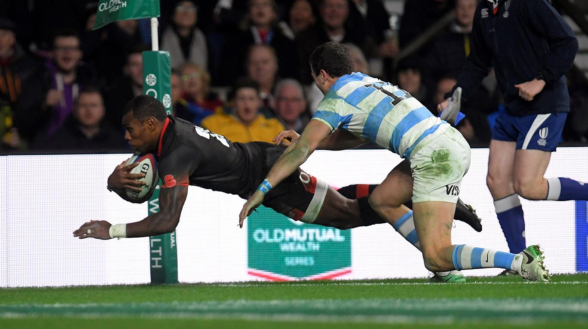

Rutas en montaña
 Una de mis aficiones es hacer rutas por la montaña
Una de mis aficiones es hacer rutas por la montañay disfrutar de la tranquilidad que la naturaleza nos aporta.
Suelo ir con amigos y quedarnos a dormir en la cima.
Enlace de interés
Rugby
 Otra de mis aficiones aunque hace muchos años que no la practico es el rugby.
Jugué varios años con el equipo del colegio y uno de ellos fuimos al campeonato de España.
Por motivos escolares (notas) me ví obligado a abandonar mí carrera profesional como jugador 😆.
Enlace de interés
De pinchos
La ultima pero no menos importante afición es disfrutar de los amigos y familia
tomando unos pinchos y unos vinitos en mi ciudad natal (Valladoldid).
Ya la han bautizado como la capital de la tapa.
De hecho, Valladolid acoge desde hace trece años el Concurso Nacional de Tapas
y es también sede del Certamen Mundial.
Enlace de interés